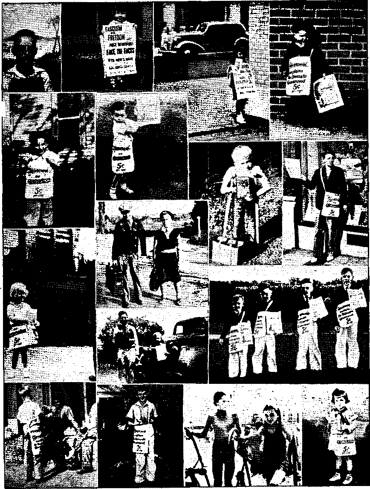
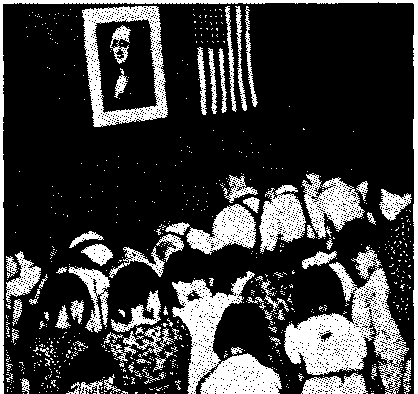

“Children Crying in the Temple” (Part 1)
Jehovah God or The State—Which?
“The Persecution of Jehovah’s witnesses”
“Enter into Thy Closet”—with a gun
Counsel by J. F. Rutherford
Under the Totalitarian Flag
No Church Persecution in Germany
Warning to Attorney-General Hughes
Traditional Enemy of Britain’s
Re-establishment of the
British Comment
Published every other Wednesday by WATCHTOWER BIBLE AND TRACT SOCIETY, INC.
117 Adams St., Brooklyn, N. Y.P U, S. A.
Editor Clayton J, Woodworth
Business Manager Nathan H. Knorr
Rive Cents a Copy
a year in the United States
$1.25 to Canada and all other countries
NOTICE TO SUBSCRIBERS
REMITTANCES: For your own safety, remit by postal or express money order. When coin or currency is lost in the ordinary mails, there is no redress. Remittances from countries other than those named below may be made to the Brooklyn office, but only by International postal money order.
Receipt of a new or renewal subscription will be ac* knowJedg-ed only when requested, Notice of Expiration is sent with the Journal one month before subscription expires. Please renew promptly to avoid loss of copies. Send change of address direct to us rather than to the post office. Your request should reach us at least two weeks before the date of Issue with which it is to take effect. Send your old as well as the new address. Copies will not be forwarded by the post office to your hew address unless extra postage is provided by you.
Published also in Afrikaans Bohemian, Danish, Dutch, Finnish, French, German, Greek, HungarianT Japanese, Norwegian, Polish, Portuguese, Spanish, Swedish, Ukrainian: also special Australian edition in English,
OFFICES FOR OTHER COUNTRIES
England 34 Craven Terrace, London, W. 2
Canada 40 Irwin Avenue, Toronto 5, Ontario
Australia 7 Beresford Road, Strathfield, N.S.W. South Africa 623 Boston House, 'Cape Town
Entered as second-class matter at Brooklyn, N. Y.> under the Act of March 3, 1679.
Youth Movements in the Bad Lands
♦ Around this country, in Louisiana, New Jersey, Chicago, Kansas City, Los Angeles, Boston and New York, the character of the men and women who hold, public office and political power is such as to cast sad dount on the character and the fundamental honesty of the people and the future of the country. In none of these new youth movements, however, is there any inspiration to better conduct. They all seem very hard-boiled, power-hungry and demanding, and no note of sacrifice or idealism is heard in the general fuss about resolutions and political stratagems. The rascals now in their middle years or early old age who have robbed the public, kitty and weakened faith in popular government in the political bad lands of the country cannot claim to have bad bad raising or no religious teaching-. .They got that, all right, but it didn’t take. They didn’t get character. I don’t know why, but youth movements, are not the answer. No youth is going to catch character in a politicalized, engineered youth movement. Hitler, Stalin and Mussolini have shown what youth movements do.—-Westbrook Peg-, ler, in the New York World-Telegram. '
Crime Costs You $10 a Month
♦ Your share of the cost of crime is $10 a month. In the year 1938 you helped to cause the arrest of 1,433,812 persons for committing major crimes. On every day of the year, in the United States, the crime center of the world, there are 20 murders, 23 sex crimes, 122 cases of aggravated assault, 12 cases of negligent manslaughter, 2,238 cases of larceny, 814 cases of burglary, 516 auto thefts, and 162 robberies. The cost to the nation is $15,000,000,000 annually. Won’t you be glad when all the criminals and racketeers are put to death at Armageddon? Crime brings sorrow, suffering and death. Its opposite brings peace and life.
“And in His name shall the nations hope.”—Matthew 12:21, A. R.V.
Volume XXII
Brooklyn, N> Y«, Wednesday, February 19, 1941
Number 559
“Children Crying in the Temple” two parts-Part i>
‘And the blind and the lame came to him in the temple; and he healed them. And when the chief priests and scribes saw the wonderful things that he did, and the children crying in the temple, and saying, Hosanna to the son of David I they were sore displeased, and said unto him, Hearest thou what these say? And Jesus saith unto them, Yea; have ye never read, Out of the mouth of babes and sucklings thou hast perfected praise?”—Matthew 21 :14-16.
Stcinmann family, Texas; ■ all over age fi are Kingdom publishers.
Little folks are natural]y honest. 1 f both parents are wholly devoted to God, the little ones see their good works and try to follow their good example. That will explain in part why, in the family here shown, there are at present thirteen blessed publishers of Jeho-vah’s Kingdom. The smallest ones, 4 and 6 years of age, are morally certain soon to follow in the footsteps of their parents, their brothers and their sisters. Of course, the worst thing that could happen to any child is to be inveigled or pressed intp taking a stand for anything that is not already in his heart, but what has been done in this family is certainly a strong encouragement to all parents to try to bring up their children to have the Lord always before their face.
Born in the Pioneer Work
Parents in Alabama write about the little girl whose picture you will find and mark No. 9 on the page of pictures which goes to make up page 5 of this issue. Her full name is Constance Ruth Taylor, but she goes by the name of “Connie”. Tier daddy says of her:
She was born in the pioneer work and we had her out, in the service when she was 37 days old. Have taken her with us through thick and thin, good and bad weather in all of our pioneer work. She is very healthy, not having taken more than a spoonful of medicine in her whole life. '
To begin with, we made a screened-in playpen for her in the back of the car, with a comfortable bed, after she became large enough to sit up and fall out of her swinging hammock.
We have been accustomed to leave her in the car and carry on our work almost as if we did not have her, putting her to bed at her usual time when night came and we were out on our back-calls and studies.
Not long ago, just before immersion services, she came running up to me and said, “Daddy, I love the Lord; I want to go through Armageddon; I want to be baptized.’7 Although previously thinking she was too young, I recognized that it would be better to go ahead and immerse her than to hold her back.
Down on the street corner the other day, in the magazine work, I gave her a Watchtower. To begin with, I instructed her to say "Watchtower, five cents”. She took it and stood on the corner calling "Watchtower'’ to everyone who came by, and placed one in five minutes. Now she takes the testimony card and goes from door to door.
After placing her Watchtower she came running up and said, “Now the Lord loves me!” very enthusiastically, adding, “If that lady reads it and believes it, she will go into the Kingdom.”
She talks about the flag-salute question and the persecution with perfect understanding. We are convinced. that the' children’s ability to understand the truth is greatly underestimated. Her bedtime stories are from the Bible.
On one occasion, while going from door to door with the testimony card, Connie said to her mother, “Let me get these two comfortable houses.” A lady came to the door of one, and after reading the card said, “I would like to have the book but I don’t have the money.” Connie replied, “We -will trade it to you for canned goods, shoes, candy or carrots!” Trading for shoes was entirely her own idea. The lady brought her a pair of shoes that were practically new. That day she also made an appointment to play the records at noon. She does her work very thoroughly, inquiring if ■ there are other families in the house, etc.
God is no respecter of persons, and little folks who love and honor Him are just as dear as big ones. And He has ways of giving assistance to those who need it and temporarily withholding protection from others. Parents in Nebraska wrote about two of their little girls. Read about the little girl that received a blessing and the other one that got something else. But she learned something by it.
Esther went with us in the witness work and had a good time; Marie was timid and stayed home. The next day in school the children insulted and abused Marie until the teachers had to interfere. The worst children in Marie’s persecution were the children of a woman who had threatened our arrest on the Thursday previous. How odd that the one who was a bit fearful was picked on and the bold one was not bothered. But Marie learned something, and will go with us hereafter.
The most interesting things in the world are folks, and they are more interesting before they are spoiled than they are afterwards. Word comes from • Arizona of two boys of seven who went out in the magazine work. One placed 3 magazines and gathered in 15c coin of the realm. The other placed nothing. The superior distributor was willing to surrender a nickel for a magazine so that his pouting brother could make a showing in his report. Nothing doing. Thereupon he warned the pouter that he could not pout and live in the Kingdom, and that shortly
Left to right: L Roy Lee Crauthers, 2. A three-year-old marcher, Columbus, Ohio. 3. Information marcher, age 6, Boise, Idaho, Theocratic. Convention. 4. Three-year-old Durham, N. C., publisher sold 40 magazines on street in a month. 5. Three-year-old Theocracy publisher, Bedford, Indiana. 6. This three-year-old Jonadab witnesses on the streets of Richmond, Va., for one hour every Saturday evening; he enjoyed the convention' as much as any grownup. 7. Lauren Gehrke, 10, on crutches for six years, is one of the regular Theocracy publishers in his home in the state of Washington. 8. Theocratic magazine publisher, Gary, Indiana. 9. Constance Ruth Taylor, born in the pioneer work. 10. Theocracy publishers at South Hill, Va. 11. Theocratic magazine publishers, Yonkers, Oklahoma. 12. Theocratic magazine publishers, all of one family, De Kalb, Illinois. 13. Theocratic magazine publisher, Fairhope, Alabama. ” 14. Theocratic magazine publisher, Boise, Idaho, Theocratic Convention. 15. Baptisms at Theocratic Convention, Detroit, 16. Jacque Cochran, four-year-old, put in 101 hours in field service in December, 1940, placing 306 booklets and 14 magazines. This was in Mississippi.
CONSOLATION
he would be leading Hons around, “and my mama won’t be worried about me either and you’ll be an evil servant.” Both have been out in the magazine work since; so it looks as if both Scooter and Scruffms would make the grade and there are no “evil servants” in Arizona after all, among boys of seven.
On our way to Egypt, Arkansas, we stopped at Alicia, a town of just a few stores, and my small son called on the business houses, placing six booklets. A few days later we drove to Alicia with other publishers, to call at the homes. In my section I noticed a house off by itself, across a creek, visited it, found no one home, but saw several men at a house in the rear. As we approached I saw an old man holding aloft a booklet, but as he saw me coming he put it down and met me at the door. When I explained our mission he again picked up the booklet, said it was the first of our literature he had ever seen, that he got it from a little boy a few days ago; that every ■word of it is true; that he wants to get all of our books and subscribe for both our magazines as soon as he is financially able. I made out a back-call and turned it over to the proper parties.— F. G. Good, Arkansas.
You sent us a slip on a good-will party five miles from Lonoke, Arkansas. We called on him, played three series for him, and got him interested in attending a Watchtower study. They have no car, so we took them fifteen miles to Carlisle to the Watchtower study for a few Sundays. The man expressed a desire to be baptized. Since then his wife and three of the four children have followed suit and we now have a. nice study going in their home. —F. B. Sergeant and wife, Pioneers.
Due to many attempts of the American Legion to destroy Jehovah witnesses’ literature and the unlawful attempts to deprive the witnesses of their freedom of worship in Drumright, Oklahoma, it has left such a deep impression on the minds of the children that, instead of playing the customary game of Cowboy and Indians, the boys are often seen playing Jehovah witness and American legion.
The following, action was seen by George L. McKee, one of Jehovah witnesses of Drumright, in one of his neighbors’ yards:
Two of four small boys were seen with canes and magazines representing Jehovah’s witnesses, standing beside an old garage and calling out to supposedly passers-by, when they were approached by two other small boys representing the American Legion demanding they leave, and not succeeding with their threats they were attempting to destroy the witnesses’ literature, when they were seen hurried into the old garage and receiving just treatment.
Following loud shouts and beating on the sides of the garage the two would-be American Legion were seen emerging from the old garage with hands- extended into the air as they were seen marched off by the witnesses to an unknown destination.—George L. McKee, Oklahoma.
Consolation was forwarded a splendid letter written to a mother by an Arkansas teacher, a real American, unwilling to try to coerce the conscience of a little child. ,
Little Folks Wish to Live
One does not have to be as old as Methuselah before wanting to live and to enjoy forever the good things God has for those who love Him. W. B. Crabb writes from Alabama: „
About three weeks after leaving Salvation with a Jonadab, we had a letter -from the party to come and baptize the mother and three boys, ages from 9 to 12. We learned that, the little daughter, age 8, said before we arrived that she wanted to be baptized also. She said she understood what it meant and that she did not want to be left behind, to die at Armageddon. Her wishes were complied with. We spent several hours with them. This was more than twenty-five miles from home.
A recent estimate is that not less than ten thousand (10 X 10 X 10 X 10) of the little witnesses of Jehovah have taken their stand squarely on the Scriptures, Exodus 20:3-5, and will resolutely refuse to be coerced into violation of their
CONSOLATION
conscience in the matter of saluting any image or thing in place of Jehovah God. The papers have been filled with accounts of their courage.
In the New Jersey Teacher Herbert H. Cole, president of the New Jersey Federation of Teachers, says he wonders at the expulsion of five little Americans from the public schools of Elizabeth and if in compelling children to salute the flag the board of education of that city is not violating the very liberty and freedom of worship that the flag stands for. Also, says this thoughtful man, “Will the tender minds of these children now learn to look upon the Stars and Stripes as an emblem of liberty or will they rather tend, should they conform with the school law, to pay lip service to the flag and in their hearts despise it?”
There is a fine statement of similar import in the Newark (N.J,) Ledger: “The steadfastness displayed by the youngsters among the Jehovah’s witnesses in adhering to their inconvenient religious scruple concerning the flag is a quality that America cannot afford to ignore. In this age of challenge to democracy the individual who is firm in his faith is a precious asset of a free country, Let those who love the flag show their love in their own way. But let us not make our flag a symbol of cruelty and intolerance to any of our citizens.”
The New York Herald-Tribune makes a good point and puts it sharply when it says, “Some dozens of young witnesses of Jehovah^ have been expelled from school in this land of the free, and two have been sentenced to a reformatory, rather than commit what they consider an act of idolatry. At least we can still call America the home of the brave." This is about as nice a way of stating that the loud-mouthed flag-wavers are unpatriotic and the conscientious children are the opposite as could well be uttered.
If you wish to know who are the brave FEBRUARY 19, 1941
in “the land of the brave” you would need only to read some of the letters that come in here. Here is another from a prominent city of Alabama, telling how elevenyear-old Eloise Jarman bursted the whole Supreme Court serenity wide open by declining to salute the flag. The story proceeds:
“Why Eloise, don’t you feel well this morning?” the teacher asked. “You didn’t salute the flag.” Eloise explained to her she felt very well, and did not salute a flag because it conflicted with the command of Jehovah God at Exodus 20:3,4. . . . saluting flags was bowing down to an image. “Why Eloise dear, we all love you, you have been such a good little scholar. . . . and now you . . . who told you such foolishness? who put this into your head ?”
Eloise was adamant. No amount of cajoling, pleading, threatening, including the threat that all her little schoolmates would shun her, that she would be expelled, could change her mind. Finally the teacher called another teacher -in on it. Eloise explained to them carefully and in detail why she could not salute a flag. They said, “Is the whole world wrong and only Jehovah’s witnesses right?” Eloise explained that would be why the whole world was going to be destroyed at Armageddon . . . the Bible says that and the Bible is God’s Word.
The two teachers were perplexed . . . what were they going to do with this determined little witness for Jehovah ? They called for the principal. '
That gentleman acted more queerly than even Eloise, he just laughed and laughed. “Why, this isn’t funny,” said one teacher. “To think,” he said, “this has finally come to our school!” Silence reigned for a moment. * The principal continued, “Eloise doesn’t have to salute the flag. , . . !”
Later Eloise brought Loyalty and Judge Rutherford Uncovers Fifth Column booklets to school. The teachers decided they would take them and read them, first going into private conference, to discuss this fully. Eloise’s teacher next day instructed the rest of the children not to dare to bother her about this matter, and to Eloise, “Eloise, you have given me the strangest feeling about things.”
Honolulu.
Above, Idaho Falls; below.
Jehovah God or The State—Whjch?
♦ The picture to the lower left, Is it a picture of George Washington and other American hoys and girls worshiping the picture of King George III and the Union Jack? No! Photograph;7 was then not so far advanced: there were then only six Catholic priests in America and their influence was negligible; besides, the boys and girls of that time were taught to worship the Creator and not men and man-macle symbols. The history of George Washington does not show that he ever worshiped any man or made obeisance to any flag. The boys and girls in the picture are boys and girls of Japanese parentage, being taught idolatry of the state by American teachers, as customary by Japanese teachers in Japan, German teachers in Germany and Italian teachers in Italy. This idolatry of state in flat defiance of Almighty God is the “abomination that inaketh desolate'’, spoken of by Daniel the prophet. See now.
CONSOLATION
MANY noble and honorable Americans will read with profound concern this stirring 24-page 10c booklet by the American Civil Liberties Union, 31 Union Square West, New York city. Ten of America s most prominent Protestant clergymen and rabbis state truthfully in their Introduction: “Nothing in the beliefs or practices of Jehovah's witnesses justifies the charges of a lack of patriotism levelled against them." They state truthfully also that the highest court in the land sustains the right of the witnesses to do the work in which they are engaged.
The booklet proper records: “One of the most extraordinary aspects of the persecution of these Jehovah's witnesses engaged in the peaceful distribution of literature was the charge, made at once when the agitation against them began, that they were agents of the Nazis. Not a word in their literature justifies such a charge."
If you send to the Union for their booklet you will read further details of the stories of Litchfield, Kennebunk and Connersville, about which you already have much knowledge. And you will learn further of how sheriffs, deputy sheriffs and Legionnaires guided or assisted mobs at Ashfork, Arizona; Crocker, Missouri; Jasper, Texas; Hinton, Oklahoma ; Greenville, Illinois, and Jackson, Mississippi, to drag men around by the feet, break their noses, beat up frail women and girls, kidnap them, carry them across whole states without food or toilet privileges, and accompany such physical beatings by such expressions‘as “Damn Jehovah", “Damn the law," and “We are the law". You will see in print the names and addresses of a number of these malefactors. Shame on the cowardly un-American Legion I
The cases mentioned in the booklet are but nine out of many hundreds in which like persecutions have taken place;
FEBRUARY 19, 1941
The Civil Liberties Union offered rewards of $500 for the arrest and conviction in each of these places of any person engaged in these persecutions, and sent the offers by registered mail to the sheriffs and district attorneys, but no prosecutions resulted.
Jehovah’s witnesses appreciate the noble spirit which actuates the American Civil Liberties Union, When they refer to the witnesses as a sect, they do not mean ill. They do not yet see that the witnesses are merely following the same course as God’s faithful since the days of Noah. ‘As it was in the days of Noah’ wickedness now prevails in all the earth, just as Jesus foretold.
The American Civil Liberties Union has tried to get these facts before the Department of Justice, which iinally announced that evidence against local officials and citizens would be presented to grand juries in Litchfield and in two places in Texas where officials clearly participated in lawlessness.
And, says the booklet, “Though Attorney General Jackson had announced his determination to check mob violence, almost no public official in the states where the worst outrages took place raised a voice. The newspapers, with a few notable exceptions, remained silent.’’ - Judge Rutherford, in a personal note, says: “The course for us is to realize that these things have come to pass and continue to do so by the permission of Jehovah and that He permits these things in order to test the integrity of those who have made a covenant to do His will, to afford the goats an opportunity to identify themselves by putting on their garments, and to afford the people of good-will toward God the opportunity to take their stand on the side of righteousness. Wo may know this, that according to God's promise all these things will work out together to His glory and to the good of those who love Him."
A STRIP of land approximately 37,890 square miles—a little larger than Scotland and somewhat similar in its natural aspects—is the Nyasaland Protectorate of British administration. It is about 520 miles long and varies from 50 to 130 miles in width and is sandwiched in between the Portuguese Past Africa, Tanganyika, Kenya and Northern Rhodesia territories. Although merely a “burg” in comparison to the huge extent of land, occupied by her neighbors, Nyasaland has had a good share in so far as the proclamation of The Theocratic Government is concerned and has enjoyed many blessings the Creator has been showering upon those of mankind who have been humbly seeking to serve and obey TIim.
Nyasaland is a picturesque little country—called by some a “veritable Garden of Eden”; by others, “Darkest Africa in fairest mood,” and indeed it will be so in all reality in time to come and when cleansed of “all things that offend”. The southern extremity of Great Rift Valley, that problem of many a student of nature, traverses the country from end to end; it is the longest valley in the ■world, extending 5,000 miles from the neighborhood of Sofala, south of the Zambesi, right into Palestine and Asia Minor, through the lake system of central Africa, as well as the Red and Dead seas. The section of the “rift” extending through Nyasaland is for the most part covered by Lake Nyasa, and the remainder by the Shire river, which empties the waters of the lake into the Zambesi river ’way down in the Portuguese territory. There are many interesting features concerning this lake, but of these more anon. Suffice it to say that in surroundings such as these, but amid many difficulties of various kinds, Jehovah’s witnesses for the past seven years have had the privilege of telling the one and two-thirds million population about 10
the Kingdom of kingdoms that is now being set up and of the Day of Vengeance now so close at hand.
The European population of 1,900, about half of whom are living in the towns of Blantyre, Limbe and Zomba, the latter being the capital of the Protectorate, do not show much interest in the Kingdom message, as do the Europeans in the Union of South Africa, for instance.
The Nyasalander
The Nyasalander is an intelligent fellow leaving his fellow African in the neighboring countries to take second place. As in other countries, the education of the African here is largely in the hands of the missionaries who, of course, receive support from the government. It is a sore point with the former that the Society’s eye-opening Message draws from their organizations the very ones whom they have been teaching to read and write. But if they simply7 will persist in “teaching for doctrines the commandments of men”, what else can they expect? Too bad! Reports by7 the department of education indicate that over fifty percent of the native population in the country7 are literate. Many illiterate ones with a wholesome desire to learn something of the truth of God’s. Word as expounded in the Society’s publications set about teaching themselves to read. The women folk have not been given the same chances as the men in education, but in one way and another they too come to hear. Usually the husband reads out to his -wife and explains as much as he can. It will be readily7 recognized then that the Nyasalander is in a fair position to grasp a big slice of the importance of the all-absorbing message of Jehovah’s kingdom and to make an intelligent choice one way or the other; that is, either for God and His kingdom or against in either passive or active opposition.
CONSOLATION
The country is a poor one, and hence it becomes necessary for the Nyasaland-er to seek employment elsewhere, in order to support his usually large family. In the Rhodesias and in the gold mines of Johannesburg and practically all over South Africa he is to be found.
This constitutes one of the distressing problems of Nyasaland. So many of the men folk leave the country that the number of females far outnumber, the males. The husbands do not. always return to their wives, by any means, or continue to support them. They frequently form new “unions" in the countries of their adoption. This by no'means serves to improve the morals or the economic condition of the natives left behind. This evil may aptly be spoken of as the “running sore of Nyasaland", even as Livingstone spoke of the “open sore of the world” when he observed the devastating effects of the Arab slave trade in this part as well as in other parts of central Africa when he explored it about seventy years ago. It was largely with a view to healing this “open sore” that he urged missionary, commercial and colonizing enterprises. Nyasaland lies on the central highlands of the continent of Africa and is therefore not subject to the ravages of malaria as the low-lying coastal, regions. It is even higher than most of the surrounding territories of this central block. It therefore lent itself readily to such undertakings by Europeans.
The African Lakes Corporation, with headquarters at Mandala, east of Blantyre, and in its immediate neighborhood, was formed by Scotsmen in response to this appeal after Livingstone’s death. It had much to do with the establishment of a British protectorate over the territory in spite of the “fantastic” claim of the Portuguese to all central Africa between their west African and east African possessions. The Portuguese even now have a province along the eastern shore of the lake called Nyasa.
The name Mandala throws an inter-
FEfiRUARY 1#, 1941 esting side light on the African native’s aptitude to give suitable or at least distinguishing names to individuals accord- -ing to first impressions. The name was first given to one of early founders of the corporation because of the glint from the spectacles he wore.
Many minerals are to be found in Nyasaland, but unfavorable transport conditions have hindered their development. Gold, mica, graphite and asbestos have all been worked in the past, and still belong to the “past”. But bauxite (aluminium ore—here we are again!) which exists in the Mlanje mountain is today being worked by a company.
Since 1935, however, the country has been linked up directly with ocean traffic, at Beira, in Portuguese East Africa. This was made possible by the completion of one of the longest bridges in the world, across the Zambesi, at the old, historic Portuguese village of Sena, Other schemes for railway development indirectly affecting Nyasaland are taking shape in Portuguese territory.
Most of the railway development by British capital for linking up Nyasaland with the outside world is in Portuguese ' territory. This, no doubt, partly explains why Britain considers it good policy to keep on good terms with Portugal, and vice versa, and also why President Carmona of Fascist Portugal, on his visit to the Union in August [1939]1, was hailed with so much acclamation. It also gives the cunning Jesuitized diplomats in Vatican City and their associates in other capitals of Europe further opportunity to twist the tail of the British lion and to draw from him, not a cuff from the mighty (?) paw, but a mere plaintive growl in response.
Nyasaland is really looked upon as an agricultural country, the most favored crops being cotton, tea and tobacco; quite a good combination towards further upsetting humanity7. The “Nyasa-
land Tea Marketing Expansion Board” goes in for a bit of tea propaganda. Lectures “on the correct methods of making tea, and the beneficial effects of teadrinking” are given and cinema exhibitions held by the traveling canteen.
Settlers have a pretty hard time of it, for Nyasaland is an unfriendly country. Large tracts of land are owned by a few companies. Much of it was obtained from the chiefs by “barter”—given in exchange for quantities of salt and cloth by the civilized land-grabber. The wage of the laborer is very low; ranges from 6/- to 8/- [about $1.45 to $1.95] per month for the common laborer and from 8/- to £1 or so for the ones in charge of the gangs. Of course one cannot compare the wages of the native with those of a European in a European country. The needs of a native are few in comparison to those of the average European. A penny (two cents) in Nyasaland goes as far as a dollar in America.
It was in 1934 that the Watchtower Society established the work in Nyasaland under European control, and at that time, as may be expected, there was much leeway to make up ere a solid front could be maintained. However, the cobwebs have been banished into the blue and Jehovah’s witnesses in this land enjoy the pleasure of presenting the Kingdom message to all concerned in its true light, and ignorance is fast disappearing over the horizon. It is well to remark that the government of Nyasaland has given the Society and its companions fair opportunity to prove their claim that the Kingdom literature and the Society’s influence are conducive to law and order. This opportunity has been much appreciated and, by the Lord’s grace, the witnesses in this land have conducted themselves in harmony with the Bible teachings and are well known as “peace messengers” and law-abiding citizens working to the good of their fellow countrymen and to the vindication of Jehovah’s name. .
12 ■
This enlightened policy of the rulers here contrasts favorably with the attitude of the governments of the neighboring countries under British rule.
The fact that there are no Jesuits in Nyasaland as in Northern and Southern -Rhodesia, where this order has established itself in and about the capitals of these two countries, serves largely or solely as an explanation for this difference of outlook.
The “Other Sheep” (Rev. 7:9,10)
‘And, lo, a great multitude, of all nations, stood before the throne with palms-in their hands; and cried with a loud voice, saying, Salvation to our God which sitteth upon the throne, and unto the Lamb.’ The “great multitude” in this country is surely coming out from Babylon. To the 550 or so publishers that stood in their places in 1934 have been added yet another thousand all of whom have had some share in proclaiming the message to the people. Besides these there are about as many regularly attending studies and -gaining a greater-*..-knowledge preparatory to taking their stand fully on the side of righteousness. Again and again is the power of the truth of God’s Word demonstrated and the hearts of the Kingdom heralders rejoiced and encouraged to fly high the banner of Jehovah and His King. Newcomers are always eager to symbolize their consecration and quite understand that the immersion is not, as the clergy teach, the “gateway to heaven”.
That which is causing many a ‘prisoner in darkness’ to throw off the shackles of restraint and fear is the heart-cheering message delivered by means of the humble gramophone. There are not many of these machines in this land as yet— the majority of publishers being poor—-but those in use are doing a tremendous work and there are many ready ears. Often village-headmen and chiefs in the various districts co-operate with the pub
consolation
Ushers by calling together their people on a set day to listen to the gramophone talks, thus saving much time and giving opportunity to many who otherwise would perhaps not have heard. Anywhere from 100 to 500 persons attend these meetings and great interest is manifested. The Baal priests are feeling rather sick about it all, for they realize the power of these recorded talks.
■ No organization under the control of the Devil would be complete without the religious sects to add to the general hubbub, and in Nyasaland their name is legion; although not all are of European Origin. Some Africans, tired of being deceived by the long-established institutions, have broken off and formed their own seeds with the hope of bettering themselves. But all to no avail; they still wear the same garments and fail to see that the Society is the one and only channel of instruction formed and working under the command of Jehovah’s anointed King to declare His purposes to all nations before He once and for all puts to silence His enemies.
Although many of the honest-heakted are "now awake to the aims and false teachings of the “old harlot” and her “daughters” which parade under the cloak of civilization and which continue to indulge in their many mysterious rites and ceremonies, the burning of incense, “holy” water sprinkling, “blessings,” and all their other modes of deception put the sprite of superstition into the minds of the fearful and simple, who doubtless live with the inward fear that if they act contrary to what they are taught the earth will open up and swallow them, or brimstone fall from heaven, or the “purgatorial” fires be made ten times hotter in preparation for their “souls” in due time. Some are willing followers of their leaders and are taught to refuse ail hospitality to Jehovah’s witnesses.
The pope’s “blessing” upon Mussolini’s conquest of Abyssinia and, more recent-FEBRUARY 19, 1941 ly, that of Franco’s ruthless slaughter in Spain—also with the present pope’s “blessing”—have come to the notice of the people in this country and have rendered them the more skeptical to the Hierarchy’s claim to Christianity, The betrayal of those peoples into the hands of the liberty-destroying Catholic-Fascists is becoming known to the Nyasalander, and the warning in the Society’s literature against this modern “Goliath” is putting him on his guard. The “strange work” of the Lord is progressing apace and the lies promulgated by the Hierarchy and her allies are being thrown back into their faces, and in place the Banner of Truth is unfurling itself before the eyes of all. Nyasaland is being warned.—W. L. McLuckie, depot servant, Nyasaland.
“Enter into Thy Closet”—with a Gun
♦ Strange things happen everywhere. One of the strangest is a tale that in Cape Town, South Africa, every day at midday a gun is fired and the whole town prays, no matter where. The London Catholic Times thinks this practice ought to be put in vogue everywhere. Thus, for example, the German bishops could shoot off a gun and pray for Hitler; the Italian bishops could shoot off a gun and pray for Mussolini; the Spanish bishops could shoot off a gun and pray for Franco ; and the pope could shoot off a gun and pray for himself. The idea back of this seems to be that the racket would attract attention up where the prayers are heard. Then the prayers would be sorted out, German prayers in one pile, Italian prayers in another, Spanish prayers in.another, and the pope’s prayers on top. The whole would then be fumigated and dropped into the coal scuttle.
Abominable Prayers
♦ “He that turneth away his ear from hearing the law, even his prayer shall be abomination."—Proverbs 28: 9. *
High-priced Perjury
♦ In St. Louis, Missouri, Judge Moore, in Federal district court, sentenced Frank J. Boehm, executive vice-president of the Union Electric Company, to serve five years in prison and pay a fine of $4,000 for repeatedly committing perjury in testimony before the Securities and Exchange Commission. Mr. Boehm denied any knowledge of a slush fund of $580,000 used to bribe politicians, legislators and judges, though this fund was. actually managed by him. By means of this fund the Union Electric Company actually paid one judge of a Missouri circuit court more money than was paid him by the state. Lawyers working for the Union Electric Co. kicked back a portion of their huge fees to enlarge the slush fund and are now in danger of disbarment. Boehm’s salary as official perjurer of the Union Electric Company was $42,000 a year. The experiences of Jehovah’s witnesses reveal that most-policemen commit perjury without hesitation.
Relief in the Dust Bowl
♦ The dust bowl of the United States is an area 500 miles in diameter whose center is at the southwest, corner of Kansas. A few years ago it threatened to become a desert, but is regaining fertility by a new system of plowing which conserves the rainfall and makes it available where it falls. Furrows follow the contour of the land and cultivation is virtually a system of terraces.
The Strange Death of Mr. Cody
♦ Near the home of Mt. Cody, in Oklahoma, a truck hit a pole carrying a 4000-volt electric circuit. One of the wires fell on a barbed-wire fence and set fire to the grass near the Cody home. Mr. Cody went out and threw a pail of water on the blaze. The stream of water hit the fence wire and went back over the stream of water to Mr. Cody and killed him.
♦ The naughty Black Dispatch, Negro paper published at Oklahoma City, described the achievements of missionaries as follows: “If missionaries found a spot sufficiently rich, they paved the way for our great ‘civilization’—which consisted of massacring several thousand natives, exploiting the rest and making them virtual slaves of whatever Christian nation could get there first, and introducing syphilis.”
How to Get Information
♦ The Daily Oklahoman requested pastors, of the city to state the amount of debt on their churches, and got almost no response. Then it stated that an oil man wms considering paying off all the debts. And did they get information? You bet they did. Everybody wanted to show his Christian courtesy and honesty and his desire to be at the head of the list when the checks were sent out.
78,000 Ghost Voters
♦ Kansas City has only 178,000 registered voters, but in the 1936 general election it was so enthusiastic jhat it polled 190,000 Democratic votes and 66,000 Republican votes. It will be noticed that the Democrats could have gotten along nicely without the 78,000 ghosts that voted, but they wanted to be sure. Fifty election officials were convicted, and 112 others awmited trial when this was written.
In the Barite Mines of Missouri
♦ Barite is used as a filler for rubber and paper, and is obtained in large quantities in the so-called “tiff” mines of Missouri. The National Child Labor Committee recently made public the fact that there are children working in these mines regularly who are only six or seven years of age ; child marriages, malnutrition and disease characterize the section.
Did They Really Say It?
♦ The Australian Consolation says that in 1733 sixteen maidens of Charleston, Virginia, presented a petition to the governor, entreating his influence to prevent widows from remarrying until the spinsters had been provided with 7husbands. The petition is alleged to have urged, “The great disadvantage it is to us maids is, that the widows, by the forward carriage, do snap up the young men, and have the vanity to think their merits beyond ours, which is a great imposition on us who ought to have the preference.” In view of the fact that there is no Charleston, Virginia, and no widow would act like that, and no young man would be so beguiled, and no girls would be so jealous about the men, this magazine refuses to believe the story or to print anything about it However, it may be admitted that there is a Charleston, West Virginia, and at the date alleged West Virginia was still a part of Virginia. But did they really say it?
Too Much Attention to the Cow
♦ At Princess Anne, Maryland, twenty students paid too much attention to the cow of Sheriff Brown.- They discovered that Guernsey milk tasted good with their lunches. Paper cups were in great demand. The sheriff noticed that he wasn’t getting any milk. An investigation followed, and the twenty boys involved lost their recesses for several weeks. The cow alone was satisfied.
Delaware’s Terrible Lashings
♦ Delaware still maintains the terrible lashing of prisoners. William Bell, 24, guilty of breaking and entering, fell to his knees several times and begged for mercy w’hile the warden was delivering the punishment of twenty blows with the cat-o’-nine-tails ordered by the court. Afterwards, he and two others had to be taken to a hospital for treatment,
FEBRUARY 19, 1941
Selling the Nicaragua Canal
♦ When the president of Nicaragua came to Washington ten thousand troops escorted him from the railroad station to the White House, every pole had Nicaraguan and United States flags entwined, every corner had a band playing- Nicaraguan tunes, and all Government employees were given two hours off so that President Sornoza could go back to his home country feeling he had one of the biggest receptions ever accorded in Washington. The idea is that it all helps sell the new canal.
Washington All Steamed Up
♦ The Washington Daily News says the women’s patriotic societies there are all steamed up as to whether women should wear gloves when they salute the flag; but the president of the American War Mothers says they shouldn’t, and so they shan’t. There has been no general order issued yet that the men must take off their pants when they salute; but hold everything: it can’t be far away.
Clever Lad Averts a Panic
♦ At Florence, South Carolina, a seventeen-year-old lad stopped the motionpicture machine, walked to the stage, and said, “Folks, you know there is a State law requiring fire drills to be held in theaters. We are going to have one now. Patrons will form in line and file but.” They complied, and a few minutes later the roof fell in. He knew the place was afire and the audience did not.
Savings by Sterilization
♦ The claim is made that the 3,091 recorded sterilizations performed in Virginia in the past fifteen years will result in the next hundred years in a saving by the state of $370,800,000 for the care of the 6.1,800 defectives which the persons sterilized would otherwise bring into existence.
15
COUNSEL
AN ACT of presumption is to assume authority to do an act and then to perform that act without first having received authority to do so. It means to do what one is not warranted in doing. Further, to assume authority to do an act in the name of Almighty God when no such authority has been given to so speak or act in the name of God, and then to perform the act, is clearly a ‘presumptuous sin’, as defined by the sacred Scriptures. —See Psalm 19:13.
The published purpose of the totalitarian group is to set up a “new League of Nations”. Their chief spokesman repeatedly announces the purpose to establish a “new world order”, and now adds, as of December 31,1940: “Almighty God will not leave those who, threatened by the world, with their courageous hearts are helping themselves. . . . The year 1941 will bring consummation of the greatest victory in our history.” On this announced purpose the clergy of the totalitarian lands pray the blessing of Almighty God.
Totalitarian efforts to carry out such proud and arrogant claim will come to naught. God caused His prophet to write concerning an attempt of the nations of the earth to control and rule it by and through a league. It is written, at Daniel 2:44: “And in the days of these [dictator] kings shall the God of heaven set up a kingdom which shall never be destroyed: and the kingdom shall not be left to other people, but it shall break in pieces and consume all these [dictator] kingdoms, and it shall stand for ever.”
Here is the positive and unqualified statement from Almighty God that neither the League of Nations nor any other combination of men and governments shall have anything to do with the setting up of His kingdom and establishing peace and righteousness on earth. It is God’s kingdom, and not man’s; and for men to assume to'do what God has declared He will do by His anointed King is a gross, presumptuous sin. The nation or organization that attempts to run ahead of God and presumptuously attempts to set up a rule or organization and call it “holy” or God’s kingdom will suffer severe punishment.
In A.D. 1914 the “times of the Gentiles” terminated and Satan’s world rule of the earth without interference from God came to an end, and from that time forward the process of ousting him and destroying his power has progressed. At the end of those Gentile times Jehovah God set His King Christ Jesus upon His heavenly throne and commanded Him to begin operations, as clearly set forth in Psalm 2: 6 and Psalm 110: 2. There followed a “war in heaven”, as stated in Revelation chapter 12, and Satan was cast out of heaven down to the earth ; and since then his operations have been confined to the earth. Since 1914 the woes upon the peoples of earth have been worse than ever before, and the reason is stated in Revelation 12:12 thus: “Woe to the inhabiters of the earth . . . for the devil is come down unto you, having great wrath, because he knoweth that he hath but a short time.”
God has declared in His Word that the next great act of His King Christ ■will be the battle of Armageddon, in which Satan’s organization shall be completely destroyed. Satan, knowing that his time is short, puts it into the minds of the rulers of earth to form a combine called the League of Nations, and employs the clergymen as the chief advocates thereof, and Satan’s purpose is to draw all “Christendom” into the League and turn the people away from Jehovah God, preparatory for Armageddon. Concerning the League of Nations, its formation and its end, God caused His prophet to write these words: “Associate yourselves, O ye people, and ye shall be broken in pieces; and give ear, ail ye of far countries: gird yourselves, and ye shall be broken in pieces; . . , Take counsel together, and it shall come to nought; speak the word, and it shall not stand. . . . Say ye not, A confederacy, to all them to whom this people shall say, A confederacy; neither fear ye their fear, nor be afraid. Sanctify the Loud [Jehovah] of hosts himself; and let him be your fear, and let him be your dread.” —Isaiah 8: 9-13.
Now let the statesmen, the governors and other officers constituting the rulers hear these words of Jehovah, written in Psalm 2:6,10,12: “Yet have I set my king upon my holy hill of Zion [God’s capital]. Be wise now, therefore, 0 ye kings; be instructed, ye judges of the earth.' Kiss the Son [Christ Jesus the King], lest he be angry, and ye perish from the way, when his wrath is kindled but a little. Blessed are all they that put their trust in him.” These words of God’s prophet are repeated here, not as a threat, but as a warning, that the rulers of the land may- have their eyes opened and may cast away from them their hypocritical religious allies who have misrepresented God. God will permit no interference with His kingdom. The claim that “organized Christianity”, so called, is commissioned to establish peace and righteousness on earth is not only presumptuous, but blasphemous against God and His Christ.
But one may ask: “Is it not now the duty of a Christian to try to reform the world and make it better?” The Scriptures answer “No”, because such is an impossibility as long as Satan the Devil is “the god of this world”. (2 Corinthians 4:3,4) The Christian is commissioned to be a witness to the name and word of Jehovah God and to tell the people why distress is in the earth and to serve notice upon the people and rulers of the FEBRUARY 15, 1941
.impending trouble that is about to come to pass and of the blessings of God’s kingdom that shall follow. That is the only reason for preaching the Kingdom gospel today by radio, by recorded speeches reproduced on phonographs, by going from house to house, or by printed publications. The day of God’s vengeance against the oppressors is at hand. The time rapidly approaches when He will express His indignation against Satan and his wicked organization that has misled and oppressed the people for many centuries. Christ Jesus is the Redeemer and Deliverer of the oppressed. He has already come into His kingdom, and His Theocratic Government will bring the relief. Clothed with all power and authority in heaven and in earth lie comes to clear the earth of wickedness and to establish a lasting and righteous peace. Concerning Him it is written, at Isaiah 9:6,7, that He is ‘the Prince of Peace and of His government and peace there shall be no end’. Under His reign of righteousness the obedient people ’will learn righteousness. This is the complete remedy for the ills of humankind. Why even waste time or energy with false methods ?
By advocating a League of Nations, the World Court, the international peace pacts, and by participating in the politics of the world, the clergy have brought great reproach upon the name of God, “whose name alone is Jehovah.” They have prostituted true Christianity in order that they might gain popularity. They have sold themselves to the enemy * of man, the Devil, that they might win the praise of men. They have misrepresented God and His Word and purpose and have turned many honest souls into agnosticism or infidelity. They are arrogant, haughty, proud and austere, and are proceeding without authority from God and contrary to His Word, and are therefore guilty of presnmptuous sin and blaspheming the holy name of God, and their day of reckoning is at hand.
Prayers and Parasites
♦ A parasitic religious growth in New ' Zealand publishes what is known as The Revival Fire Monthly, the mouthpiece of a so-called “Healing” mission, founded by a shrewd individual with a propensity for prayers and pence. He is a rabid persecutor of honest Christians, as perusal of the pamphlet Monthly shows, and a collector of semi-humorous “testimonies” to the efficacy of his religious prayers and blessings.' Bun your eye over these: “An old lady who came sometimes with us to the mission has gone on holiday, taking magazine and blessed handkerchief with her. She hunted everywhere one day for a photo, and was getting quite distressed when the words, ‘Ask and it shall be given you, seek and ye shall find,’ came to her, so she went straight to a place where she had looked before and was sure it wasn’t there, and there it was.
“I asked you to pray for a wee boy who had swallowed sixpence and on Monday his mother came over and told me it had passed through him on Sunday morning.
“The landlady where I am staying had a very sore toe, and as I had no blessed handkerchief at the time a sister of the mission gave me a piece of blessed bandage, which I gave to the lady for her toe. She wore it on her toe and the toe was healed. Last night she took cramp very badly in her stomach, so she took the bandage off her toe and put it on her stomach and she fell asleep and has not had a touch of pain since.
“Great-grandmother had a rash which the doctor thought was caused through an insect getting under her skin—but, praise the Lord!—prayer was made and it has nearly gone—only a few pimples left on her back.”
The demons are having a busy time holding religion together these last days, and The Revival Fire Monthly must be a great help.—Australian Consolation.
Poltergeist in Indiana
♦ So many fires broke out in the home of William Hackler, near Odon, Indiana, that the family had to abandon their home and move elsewhere. Two possible explanations may be offered: one that the home chanced to be at a place where very strong electrical currents clash with one another. Some such explanation has been made of ships that took fire at sea. Another, more probable, is that some member of the family has been in touch with the demons and that the fires (25 in number) are the result of poltergeist. In some instances calendars on the wall took fire, in others curtains at the windows, and in other instances even the middle pages in a book in the bookcase were destroyed. The demons had a good time. They get great pleasure in being as mean as possible to poor humans.
What the President Wanted
♦ At a Negro church, 4301 Kennerly avenue, St. Louis, where a twenty-year-old girl dances in front of the pulpit for an hour every night, and where the congregation, as she touches them, also writhe and scream and dance and fall prostrate on the floor, Daniel Bostick, the presiding clergyman, proudly said, of these manifestations of demonism, “We’ve got here just what President Roosevelt said the country needs, more religion.” Daniel told the truth that time.
Twenty-two Fortune Tellers
♦ Washington, D.C., is one of the centers of the fortune-telling industry. It now has twenty-two of these adjuncts of human and inhuman society, and each one thus working directly with the demons pays an annual license fee of $250. One of the women in the business charges $25 for a half-hour seance and is so busy that appointments must be made two weeks in advance.
"Government”
♦ The people of the world have at last recognized, not very articulately, to be sure, not as lucidly even as they should and will, but felt, with an apprehension driving them to take a stand, that the enemy of the human race today is what falsely calls itself “government".
It is not capitalism, not socialism, not any of the old bogies. It is the brutal, naked, criminal power of the runaway state. And they have seen that power spreading, octopus-like; they have seen people, individual human beings, caught by its tentacles, disappear into its maw —millions of them, The most primitive instinct of self-preservation—not even national preservation, self-preservation —mobilized them to resist. For what has it done, this naked and undivided power? It has deprived men of all the attributes of manhood, and women of all the attributes of womanhood, and children of all the attributes of childhood.
It has divided families; it has broken into the family cash box; it has engaged 'in every criminal activity, in murder, and arson, and infanticide. It has bent men’s backs to labor of no conceivable human use. It has taken the food from their mouths in order to put guns in their hands and tell them to murder their brothers.
It has torn hundreds of thousands of people, individual people, from their homes, from the houses in which they live and the soil on which they work, and thrown them adrift penniless upon a cold and cowering world. ,
It has herded them into boxcars and deported them, freezing and starving, to remote places where they are enslaved or starved.
It has gagged their mouths and paralyzed their brains. It has set sons against their fathers and daughters against their mothers. It has defamed the God in whom they had faith. It has set spies up-FEBRUARY 18, 1941 on them. It has beaten and robbed and imprisoned and tortured them. It has made their grandmothers testify against them from their graves and turned their race into a universal term of opprobrium; dirty Jews; dirty Poles; dirty Czechs.
The state has become the enemy of mankind, and a worse enemy than plague, pestilence and poverty. The power that the people have given the state, while it posed as Santa Claus, must be wrenched back from the monster it has become.—Dorothy Thompson, in the Washington Post.
Echoes of Muscle Shoals
♦ Before the first World War ended the United States War Department expended several million dollars at Muscle Shoals for the making of nitrates. Now a new war scare is on and the same war department wants some more millions of dollars to build new plants for the manufacture of smokeless powder,/ammunition and chemicals. The Muscle Shoals plant has stood idle from the time it was completed, but has been kept up at Government expense. Did the War Department propose to make some use of this huge investment? Not at all. Moreover, it is claimed that the Muscle Shoals plant was obsolete before it was completed. It really seems that the War Department is panic-stricken at the idea of saving any money.
A Sixteen-Inch Gun.
♦ A sixteen-inch gun costs $246,000 without the aiming apparatus. It discharges a projectile weighing a top. When the gun is bred it leaps back six feet. The ship shudders. Light bulbs left in their sockets burst, and a man outside the turret may have his clothes ripped off and his hair singed by the force of the blast. The projectile deals death at 18 miles.
UNDER
THE TOTALITARIAN
FLAG
Futile Prayers
THE National Catholic Welfare Conference reports President Roosevelt as saying over the radio that he prays day and night for peace in a mad world and asks the American people to do the same. He is wasting his breath. Under his administration Jehovah’s own people have received every kind of evil treatment that evil men, women and children know how to bestow, and the president has been the soul of kindness and graciousness to those who have done the wrongs and has never publicly reproved or rebuked them in any manner, despite the fact that these misdeeds have been many times brought to his notice. Mrs. Roosevelt, however, did on one occasion beg that Jehovah’s witnesses be not attacked by mobs—to her credit be it said.
At the very time that twenty-five hundred nuns in New York went on a novena praying for world peace, thirty of the bishops to whom they look up telegraphed to Mussolini to go ahead and grab Palestine for the pope. Did you notice that on May 26 every Catholic Church in the United States offered prayers for world peace and immediately thereafter things got worse, as was to be expected? Within a few days Britain was backed into the English Channel and France was a supplicant for peace with Hitler at her throat and Mussolini with his dagger stabbing her in the back and Pacelli secretly wishing good luck to them both.
This business of praying before pulling off some dirty trick is a specialty of the Roman Catholic Hierarchy. Thus, it seems that after Italy joined with Germany to pick the bones of France the 20
pope “knelt before the altar in his private apartment and prayed for a long time” and after that things were very much worse for the French than they were before, as was to be expected. The interesting thing about this, however, is how it came about that the news-hounds knew all about this private praying in a private apartment. It is all plain enough. The pope wanted the report sent out, and out it went. In some cases even the headlines are sent out, so that the dear public may get a continuous flow of the most perfect, unadulterated, simon-pure buncombe that it is possible to manufacture.
Of course, the Roman Catholic Hierarchy was squarely behind Italy’s declaration of war against France and Britain, because it wishes to see both of these democratic nations replaced by units of the revived Holy Roman Empire, but for decency’s sake six days were allowed to elapse before Monsignor Carlo Mar-giotti, archbishop of Gorizia, issued his pastoral letter endorsing Mussolini’s move and urging the Italian people to back him to the limit. Endorsements of the other bishops and archbishops followed in due season as above shown. All are enthusiastic for the program, but pretended for a time to be for peace and to even “grieve”, like the pope.
Italian airplanes gained a great victory at Tel Aviv. The “brave” men who flew the planes killed 55 children and 57 other persons, thus reminding one of some of the great victories in Spain, the Balearic Isles and Ethiopia, also Albania. One thinks particularly of the shelling of the little children on the flint road from Malaga to.Almeria, and of the thrill that Mussolini’s son obtained from bombing the ’ helpless and weaponless Ethiopians. Perhaps that young man was among the ones that snuffed out the lives of the 55 children of Tel Aviv, and may have been once again impressed by the spurting of human blood “like a rose opening up”. If the pope wants to do the right thing he will now compliment these
CONSOLATION
defenders of his “faith”. There were no military objectives within thirty miles of Tel Aviv, so that the airmen ran no serious risks in their killing of the little children. Besides the dead, which numbered 112; there were 151 wounded. Probably some of them also are children. A wounded child might be a pathetic sight to some, but not to anybody mixed up in the Pacelli-Hitler drive for world dominion.
More Bogus Prayers
At the same time that the German cardinals were urging German boys to sacrifice themselves for der Fuhrer and to pray for a German victory British Cardinal Hinsley issued a call for all English Catholics to pray for the triumph of France. In both instances the prayers went to “the god of this world”, who is the Devil.
At the same time that the bishops of Italy were praying for the success of Mussolini and the bishops of Germany were imploring their god for the success of Hitler, and demanding that all be obedient to him even at the cost of life itself, Cardinal Hinsley in England wanted all Catholics to pray for God to help England, and he also stated that “when a whole congregation or community receives Holy Communion together they are all one in Jesus Christ”.
Just before the surrender of France and the betrayal of the Republic into the hands of Petain the Dictator, there was a big prayer meeting in Notre Dame Cathedral at which Reynaud and Dala-dier were both present and prayers were offered all in vain to certain French “saints”, such as Joan of Arc, St. Denis, St. Genevieve and St. Louis, to get on the job and do something; but they didn't do a thing. They are stone dead, every last one of them, and that was probably one reason why they did not do anything to help the lost cause.
On June 24 Hitler publicly proclaimed thanks to the Devil for his blessing, ordered the display of flags in the Reich
FEBRUARY 19, 1941 , for ten days, so 'that everybody could salute the swastika, and ordered the church bells to ring for seven days. What he said was, “In humility we thank God for his blessing,” but his “god” is the god of the Roman Catholic Hierarchy, who is the Devil, and whose spirit he has. Hitler was born and brought up a Catholic and is a loyal and obedient son of the “church”.
It sometimes happens that some of the more courageous writers tell the truth about this shameless aggregation. Thus, in an article in The Nation, Waldo Frank said, in part, “The Catholic Hierarchy, which daily shames Jesus Christ, would gladly flirt with Mussolini or any other scoundrel who promised it the kingdoms of the earth that Christ rejected.”
Fascism the Real Objective
Fascism is the real objective of the Hierarchy, and it is in hot water, now that these objectives are known, and it is trying to pull off the old gag that it is too spiritual to take sides, and thus lull the people in the democracies into sleep and into death.
. Cardinal Hinsley, in Britain, weakens the British soldiers by falsely claiming that the war is an expression of God's wrath which must be placated by processions, idolatry of a little piece of bread, etc., etc. It is all very clever. According to that philosophy God was mad at the Czechs, so He gave their country to Hitler; mad at the Austrians and gave their land to Hitler; mad at Poland and split their country between the two cronies. Hitler and Stalin; mad at Denmark and Norway and gave them Hitler as their ruler overnight; mad at Belgium and got them to double-cross Britain and France; mad at France, so he gave them Hitler as a ruler; and mad at Britain, so he put Hinsley in London and Mussolini with his stiletto in Italy.
When Pacelli was invited to take his stand on the side of Norway he turned the offer down cold, letting the petitioners know he is not interested in Protes-
tant Norway but in Catholic Germany. In England Cardinal Hinsley had to rebuke the pope by saying, “This country [Protestant England] has been chosen by Almighty God, almost by a miracle, to be on His side. We are fighting the cause of God, and of truth and of Christianity and nothing else?1 That must have made Pacelli squirm, if he has a conscience. But he probably did not squirm.
All Dutch and Belgian bishops were tipped off as to the part they were to play when Hitler seized Belgium and the Netherlands, with the result that not a single one of them lost his job. As showing the care of Hitler for the church of his choice, it is stated that not one of the French cathedrals was injured in the terrible bombings which occurred in Amiens, Abbeville, Arras, Lille, Cambrai, Laon, St. Quentin, Noyon, Soissons, Rheims, and Verdun. Manifestly, all aviators were warned to spare these churches, possibly because of the stores of various kinds that awaited arrival of the German troops.
Hierarchy and the Dictators
Because of the fact that he was of known Fascist sympathies and tendencies, Pierre Laval, opportunist politician, was chosen to form the totalitarian constitution under which France now operates. The Laval-Petain government (if such it can be called) agreed that all refugees Hitler might wish to torture or murder should be turned over to him to do with them as he would.
Coincident with the announcement that Petain would establish a Fascist state in France in lieu of the French Republic, the French Catholic youth organizations, instructed by their priests as to what would be expected of them, wrote to the octogenarian pledging their support. Coincidentally also, the Osservatore Romano, official organ of the Vatican, had the following regarding Marshal Petain;
. , . the brave marshal, the good marshal who, more than any other man, seems to personify the best traditions of his race. It is 'of this old octogenarian that the youth involte the renewal of their country with a happy intuition in that perennial youth which the religious, Christian, Catholic faith of the marshal knows how to guard to obtain for his siek country a prodigious spiritual cure. Such is the dawn of a new radiant day, not only for France but for Europe and the world.
Vatican praise goes out to those that do its will. July 8 the Osservalore Romano praised the dictator of France in the language above quoted. July 9 it wrote of the totalitarian rule in Portugal and “the fundamental ideals of the new order” which “glitter as distinctly as a rainbow”. July 10 the same paper bestowed high praise on President Roosevelt.
Petain shows his obedience. As early’ as July 14 the French dictatorship Imgan the usual purge, at Vichy, where twenty persons were arrested, mostly7 Jews. The German conquerors explained this as “the elimination of Jews from Government posts”. This is all regular, as is also the statement that only men of French parentage may hold posts under the new totalitarian government.
The Manchester Guardian says truly that Marshal Petain and his associates “have more sympathy with the ideas of order represented by the the dictators than with the ideas of liberty that inspire the democracies. This bias destroyed their morale and their judgment”. In other words, it was the easiest thing in the world for Petain to surrender the French people to Pacelli and Hitler.
The New York Daily News contains the significant statement that “Petain (France’s dictator), former French ambassador, to Spain, is a close friend and admirer of Gen. Francisco Franco, head of the Spanish corporative state, who in turn is an intimate of Premier Mussolini”. All of these men are Roman Catholics, as are TTitler, Salazar and other European dictators, and do nothing without the consent, guidance and direction of the Vatican, the guiding force behind every totalitarian government.
There is hard luck ahead for Franco the Butcher. The pope sent a telegram to Spain recently, saying in it, in part, with respect to this brutal traitor to his pledges, that we, the big boss of creation, “with all our heart bless the most beloved Spanish nation and its noble leader.”
There are 30 million Catholics living in the Third Reich, and in all cities all the Catholic churches are open the entire day. In Berlin’s cathedral, we Spanish journalists attended a solemn-high mass after which a Dominican priest preached a sermon lasting nearly an hour. In Berlin’s 60 Catholic churches, and in thousands of others throughout Germany, exactly similar services were taking place at the same time. Later on, in the occupied section of France, we saw posters, placed .by the military authorities at the doors of numerous churches, announcing the hours of masses for the soldiers of the garrison. Great care is taken that soldiers attend church service regularly. A further proof of Germany’s respect for the Church may be seen in the fact that, in the entire section of French occupied territory through which we passed, we did not see a single 'destroyed church.—Senor Casariego, the editor-in-chief of the Madrid evening paper Alcazar.
Privileges Enjoyed by the Church
As a result of the Concordat, the clerical garb has been protected by law in the same way as State uniforms, and its misuse or desecration is criminally punishable; The Church communities in Germany have the character of corporations in public law. As a result, they enjoy:
a) The freedom of the courts; that is, they are exempt from all legal costs when they have recourse to the Courts.
b) They are juridical persons and therefore own property, are entitled to inherit property, etc.
c) They enjoy the right to collect taxes from their members.
The State places its financial authorities (Finanz-biiros) at the disposal of the churches. The assessment for church taxes is worked out by the Church itself. The church tax amounts to from 7 to 10 percent of the income tax. Therefore, a person who pays 200 Reichsmarks income tax must pay a supplement of from 14 to 20 Reichsmarks in taxes to the church.
The Church also collects Church Money, not exceeding 30 Reichsmarks per person annually, from persons liable to church taxes. Church taxes in arrears' are collected by the State. The church tax goes directly to the Church Fund (Kir-chenkasse). The payment of church taxes does not depend upon the piety of the tax payer. Membership of a church requires the payment of the church tax.
In addition to the taxing privileges granted the churches by the State, considerable Government subsidies are granted for the fulfillment of church purposes. These subsidies amounted to 133 million Reichsmarks in 1933, 170 million in 1934, 250 million in 1935, 320 million in 1936, 400 million in 1937, and 500 million in 1938.
The State also pays the salaries of those pastors whose parish tax income does not suffice for the purpose. Archbishops also receive an annual salary of 36,000 Reichsmarks; bishops, 21,000 Reichsmarks. Canons receive the monthly salaries set forth in the Concordat, which range from 1,500 Reichsmarks upward. In addition to receiving salaries, clergymen may also enjoy income from their other activities (administrative work, literary activities and the like). The State furthermore maintains the theological faculties of the universities.
[The above statements, obviously truthful, are taken from a lengthy article, “The Role of the Church in Germany,” published by the German Library of Information, 17 Battery Place, New York—the headquarters of German propaganda in America.—EdC]
FEBRUARY 19, 1941
23
Warning to Attorney-General Hughes ♦ When General Weygand was placed in supreme command of the Allied forces the press reported he first went to Rome for mass. The general appointed by the British government to make a statement offsetting the Petain Government’s statement and accusation that the British were responsible for the French defeat declared that the B.E.F. started their offensive southward through the German salient, gained and held their objective for two days, and then, through no fault of their own, retired. Later it was found that the French offensive northward, due to start simultaneously, was never undertaken! The B.E.F. was fortunate to fight its way out of the trap. Weygand is now one of the clique of Catholic Royalists in charge of Fascist France.
When Eugene Pacelli, now pope, was nuncio to Germany for the Vatican he plotted with Fritz Thyssen, Roman Catholic millionaire industrialist, to overthrow Chancellor Bruening, who worked only within the 'German Constitution, and to replace him with Hitler. Von Papen, the Vatican’s lay nuncio to Germany, assisted by forcing General Hindenburg’s hand by causing him to nominate Hitler. The plot succeeded.
One of the first evidences of Hitler’s foreign policy was indicated by the signing of the concordat with the Vatican. Pacelli was mainly responsible for the contents thereof. An agreement was struck that Jehovah’s witnesses would be banned. The organization was declared illegal by Hitler, their property confiscated, and 6,000 members were thrown into concentration camps irrespective of age or sex. The Catholic interests are moving to have you take the same .action in this British Democracy. In Germany 1,500 of those thrown into prison have been tortured to death, in some instances by the most diabolical means conceivable, firstly, because they oppose Romanism, and, secondly, because they refuse to ‘‘Heil” Hitler, claiming that Christ’s kingdom will save the world, and not Hitler or any other man.
Their resistance to Hitlerism and their bravery under torture in the concentration camps was the part subject of a White Paper issued by the British Government. The present attitude of the British Government to Jehovah’s witnesses is that any member, upon producing evidence that he is a bona fide associate of the organization, is placed on the list of conscientious objectors, and is given complete freedom to continue the work of witnessing to the incoming of Jehovah’s Theocratic Kingdom.—From an open letter in October 2, 1940, issue of Australian Consolation.
Japan-Vatican Conspiracy in China
♦ Every inch of the ground gained by the war against the Chinese now belongs to the Roman Catholic Hierarchy, wherein she practices her wicked, God-dishonoring racket. If there were need of any further evidence that religion is of the Devil and that the Roman Catholic Hierarchy take the lead in this, that evidence is fur- ' nished by what has recently taken place in China and Japan. There have been formed into a combine Buddhism, Shintoism and Catholicism, which has received at the hands of the Japanese a new title, to wit, “Pure Japanese Type of Christian Religion,” and this is used by them to further blind the people and to further dishonor the name of Almighty God.—1941 Yearbook of Jehovah's witnesses. ■
Cieognani’s Zuchetto
♦ This magazine did not intend to say anything about anybody’s zuchetto, for fear it might be misunderstood, but now the facts are out and the Los Angeles Examiner admits that “Archbishop Cicognani was dressed in the obito piano [maybe this is a new name for a baby grand l, the habit ordered by Pope Pius X for prelates. It consisted of a purple zuchetto, a black cassock with purple trimmings and purple sash”.
{To be continued)
■ CONSOLATION
To Figure Your Income
♦ If your income is $2,400.00 a year, and you have a diamond ring or a)i automobile, and you are married to a brunette man, 26 years of age, you take the amount of the income and add your personal property, subtract your street number, multiply by your husband's height and divide by your telephone number. If you have a child in the family, you subtract $200.00 from your income, add your dress size, add the child's age, multiply by your waist measure, subtract the amount of funds you have given to the church in the past year, and then divide by the number of your automobile license.
If there is a second child you deduct _ $400.00 from your income tax, add the weight and age of the child, and divide by the date of your birth, multiply by the size of your glove and subtract the weight of your mother-in-law.
After you have it all figured out, you won't have to pay any tax of any nature, for they will have you in a private cell at St. Elizabeth’s—and strapped down. —Contributed.
After Seven Years
♦ That we are better off in many respects than in 1932 no one denies. That we are worse off in other respects is also undeniable. In 1932 the national debt ivas $22,000,000,000; today it is at least ~ $44,000,000,000, not counting contingent liabilities which may amount to $10,000,-1X10,000. In seven years the Roosevelt administration has spent $65,000,000,000— and the eight years of Woodrow Wilson, including the World War, saw only $46,000,000,000 spent. AU W’e have to show for the vast amount of money we have spent is almost the worst record of recovery in the world. In December [of 1939] there were still 8,428,000 unemployed, according to figures of the. National Industrial Conference board. This
FEBRUARY 19, 1941 compares favorably with the number unemployed at the depth of the depression, but to say that the New Deal has even come close to solving the unemployment program would be a gross misstatement. The fact is that that part of our recovery which is normal has been in spite of, and not because of, New Deal policies; the rest of it is the artificial product of government spending—Los Angeles Times.
The Hidden Taxes
♦ The hidden taxes which you pay are 37 percent on auto upkeep, 25 percent on rent, 20 percent on cocoa,.patent medicines, beauty preparations and shaving (•ream, guns and shells; 18 percent on sugar, 17 percent on diamond rings, 15 percent on new automobiles, gas, bread and telephone bills; 13 percent on new furniture; 12 percent on movie tickets, men’s clothing, electricity, and matches; 11 percent on railroad fare; 10 percent on wailpaper, women’s clothing, milk and other dairy products ; 9 percent on vegetables; 8 percent on meat and canned goods; 7 percent ori shoes; 5 percent on soap; 6 percent on bus fare; and 3 percent on insurance. On cigarettes the tax is 75 percent: and on beer, 34 percent. Now that Uncle Sam is all out to help Britain, all taxes must go up sky-high.
A Few Too Many Slabs
♦ Madeline Mayling walked off the Italian liner Vulcania with 1.2 slabs of opium under her girdle. It was a few slabs too many, and so Madeline was held in $25,000 bail for smuggling. She thought the opium, which was so valuable, was just so many slabs of Roquefort or Limberger cheese. Madeline’s mama should have brought her up better than to fib like that to the customs inspectors. Anyway, the next time she fries to walk ashore with some slabs of opium under her belt she will cut down on the number, so .that she won’t look so odd or walk so ungainly,.
25
WATCHTOWER, 34 Craven Terrace, London, W. 2, England, on January 15, 1941, released to the public Kingdom News No. 8. It contains information for all persons of good-will toward Almighty God, presenting the evidence that religion is a snare and a racket and that' God’s truth shields and strengthens the upright. It is devoted to the principles of justice, truth, equity and kindness as exemplified in the acts and sayings of the Creator of the Universe and of His King Christ Jesus, It took as its basic text Isaiah 9: 6, 7, which reads: “The .government shall be upon his shoulder; and his name shall be called Wonderful Counsellor ... Of the increase of his government and peace there shall be no end . The zeal of Jehovah of hosts will perform this." The article which constitutes No. 8 has as its topic: “Jehovah’s Mandate to His Servants; Witness Against Papal Rome, Nazism, Fascism—Enemies of Christianity," Liberal extracts from this number are given:
The British people today know they are fighting against the most wicked and iniquitous combine of enemies ever organized to destroy freedom and true Christianity in the earth. Britain alone stands firm, battling, against the religious and totalitarian combined enemies in her fight for the rights of a free people. From the days of the Magna Charta to this day, Britain has developed into a stronghold of liberty, preservers of the freedom of conscience, and champions for the open Bible, the Word of Almighty God. This bulwark of democracy is now threatened by these enemies—Papal Rome and Nazism and Fascism. . '
TRADITIONAL ENEMY OF BRITAIN’S FREEDOM OF WORSHIP
Centuries ago the British people fought against and have withstood the constant striving and undermining influence of the Church of Rome. In this conflict Rome’s Jesuit agents have ever acted in the manner now known as “fifth columnists.” Since the days of the Ref-26
ormation the Catholic Hierarchy of Rome has schemed against growing British liberalism; against the bpen Bible and freedom of thought, in an effort to re-establish her “spiritual” supremacy in Europe and indeed eventually over the whole civilized world.
History records how time and again this traditional enemy of Britain, the Papacy, maneuvered combinations of European nations to attempt the destruction of “heretical" England and force her into the Catholic fold. By intrigue another combination of Continental powers seeks what they think will be the final crushing of Britain. As long as Britain remains free and champions the open Bible, she will continue to stand as a thorn in the sides of the Roman Hierarchy and continue to challenge her universal claims of supremacy and infallibility.
AIMS
The London Catholic Herald, perhaps inspired by the Roman Hierarchy, revealed the following information as to its attitude toward British liberalism, in its issue of September 15, 1939:
“It is evident that there is a growing trend of thought in Europe which would base our civilization upon a tradition that is Catholic in sympathy and in conscious or unconscious opposition to the liberalism derived from the French Revolution and British World influence." '
ARE THESE MERE COINCIDENCES?
There is reason to believe Catholic intrigue brought about the collapse of France. The Vichy government has restored many of the ancient rights and privileges of the Catholic Church in France. Petain, Weygand and other rulers who sold out France, thus putting to an end the French liberties so dearly won by the Revolution, are all ardent Catholics.
Adolf Hitler is a life-long Roman Catholic. The Nazi organization was built on treacherous Jesuit designs. Since 1933 Hitler has stamped out the Christian work of Jehovah’s witnesses in Germany. He has imprisoned, maltreated, and even killed some of these
CONSOLATION
faithful servants of the Most High God because of their stand for the open Bible and for God’s Kingdom. Today over six thousand Jehovah’s witnesses languish in Hitler’s concentration camps.
Mussolini is a Roman Catholic. He and his Fascist government signed the Lateran treaty of 1929 restoring temporal power to the pope. Both Germany and Italy have a present working concordat with the Vatican. The pope recently gave an audience to 200 Italian Army Officers and said to them: “We bless all you who serve the beloved fatherland with fealty and love.” The pope also blessed the army which raped Abyssinia.
General Franco, the “Christian gentleman”, is a faithful servant of the Roman Church. The Vatican openly and unashamedly supported him, and conferred its official blessing upon his army as it butchered multitudes in Spain. Leopold, king of the Belgians, is a Catholic, and history will record his treachery of May, 1940.
The Daily Express August 29 reports as follows: “German Roman Catholic bishops decided yesterday, according to the official German news agency, that ‘after the completion of the final German victory special ceremonies of gratitude to the German troops and of loyalty to Hitler will be announced.’ ”
As the totalitarian steam roller crashed throughout Europe it crushed out the liberties of the people, freedom of conscience, and, above all, put an end to the open Bible and suppressed true Christianity. A “blackout” of true Christianity has now been forced in Italy, Germany, France, Belgium, Poland, Czechoslovakia, Holland, Spain, and Norway, in which countries the activities of Jehovah’s witnesses have been suppressed and thousands of these true Christians detained in prisons. '
What power opposed to true Christianity is operating behind these scenes? These facts speak for themselves and obviously are not mere coincidences.
RE-ESTABLISHMENT OF THE "HOLY ROMAN EMPIRE"
Strange as it may seem, Hitler engages in a crusade for the re-establishment of the “Holy Roman Empire” or world domination by Catholicism, evidently, as described by some Nazis, a Catholic Revolutionary movement. In a speech in Berlin, December 10, 1940, Hitler reaffirms this dream. The Evening News, London, December 10, reported the following in his speech: “The world did not want a united Germany, because it knew such a Germany would press claims of her people. The world wanted to maintain Versailles, in which it saw a second peace of Westphalia (reference to treaty of 1648). That was the primary cause of the present conflict.”
“For centuries,” continues Kingdom News No. 8, “the popes have boasted and blasphemously claimed to be as God on earth. They have declared that the world is under their authority, and have claimed the right to destroy ‘heretics’, that is, all who deny their claims. In this professed Christian political-religious organization millions of honest and sincere people have worshiped, and through fear have been subjected to the ,creeds and dogmas of men. Down through the centuries a few faithful Christians, all Jehovah’s witnesses, have stood out against organized hypocrisy and have borne testimony to the truth of the Bible.”
WITNESS AGAINST THEM
Once again the ’witnesses of Jehovah lead in the fight for righteousness and for the honor of Jehovah’s name. Over six thousand of them in Germany have been deprived of all liberty and have suffered the horrors of a revived inquisition; martyrs for true Christianity and for the vindication of Jehovah’s name. Sir Neville Henderson recorded in the British White Paper (Cmd.‘ 6120): “Their courage and religious faith were remarkable, and they professed themselves ready to suffer to the uttermost what they felt God had ordained for them.”
Every Christian in these islands should take heed to-these facts; for they are under the same obligation to witness that Jehovah is God and that the claims of the pope are unscrip-tural and therefore false. Every thoughtful person may now see the common purpose of “Catholic Action”, Hitler and Mussolini to overthrow the work and testimony of the English Protestant reformers. Let every Christian, Catholic or Protestant, awake to his responsibilities. The Bible fully reveals the issue now at stake. At Matthew 24.: 15 it is recorded, “When ye, therefore, shall see the abomination of desolation [the Catholic Totalitarian combine], spoken of by Daniel the prophet, stand in the holy place, . . . then let them which be in Judsea [Christians] flee into the mountains [God's Theocratic Kingdom under Christ, the city of refuge].”
FEBRUARY 19, 1941
27
A great evil that is abroad today is the snare and racket of religion, and every Christian, man or woman, should now identify himself with Jehovah’s name and against the Hierarchy of Rome, the leader of religion, for it is anti-Christian. True Christianity is not a religion, but is undeflled worship and service to God based on the plain word of the Scriptures and according to the commandments of God.
JEHOVAH'S WITNESSES
There are thousands of Christians in Britain today who have forsaken religion and have taken their stand as, Jehovah’s witnesses in obeying the mandate of the Most High God. They are proving their faith by their works in visiting the people with the comforting message of the Scriptures. Jehovah’s witnesses in Britain have been active as a collective company of faithful followers of Christ Jesus since 1881, and have been engaged in their Christian work since shortly after that year. Jehovah’s witnesses are organized world-wide under the charitable corporations known as Watch Tower Bible & Tract Society and International Bible Students Association registered in London.
BRITISH PRESS LIES
In its issue of October 14, 1938, the Catholic Herald London published a libelous report of Jehovah’s witnesses and Judge Rutherford, the president of the Watch Tower Bible & Tract Society and president of the International Bible Students Association, The Catholic Herald was forced to publish a retraction and pay the legal costs. ' -
The “Rev.” Ernest D. Panter, of Brimsd combe, published a slanderous attack on Jehovah’s witnesses when he said they were “busily engaged in attempting to undermine the-authority of the State”. This libel was also put into the hands of the solicitors and the “Rev.” Panter was forced to publish a retraction and pay legal costs.
The Empire News of Manchester recently published a slanderous statement implying Jehovah’s witnesses were anti-British and subversive. This also has been subject to legal action and the Empire News has been compelled to publish a 1,300-word Affidavit by Judge Rutherford proving their statement was both defamatory and contained lies. Jehovah’s witnesses are loyal, law-abiding citizens of the State who follow the Scriptural injunction of rendering unto Caesar the things that are Caesar’s and unto God the things that are God’s.
FRIENDS OF THE PEOPLE
Jehovah’s witnesses today, as their predecessors in the ages past, are the friends of all lovers of righteousness. The Bible is the greatest treasure of the British people, and the freedom of the open Bible must be maintained. Its rich truths will make one free. Let none turn back to Papal religion which will lead the masses again into the dark ages of superstition, unbelief and enslavement. All should lay hold of God’s Word of Truth and enjoy the great light that is now shining from His temple. Lovers of righteousness should take their stand for Jehovah’s Theocratic Government under Christ, which is man’s only hope. This glorious Kingdom will be fully established after Armageddon, the battle of the great day of God Almighty, now impending. ■
Before an American audience of 45,000 of Jehovah’s witnesses at Detroit, Michigan, Sunday, July 28, Judge Rutherford made the following statement amidst great applause:
“England alone stands firm, battling against the religious-totalitarian combine and in her fight for the rights of a free peo-; pie.. England has been kind to Jehovah’s witnesses; and because of that kindness shown it may be expected that Almighty God will show some special favor to England in her hour of terrible distress,”
By J. II emery (London)
The Pope and the War
• Before the close of the year the pope spoke to the world once again telling it of the soreness of heart he has because of the sad conditions in which all humankind is thrust, because of the disputes between certain nations. He told of his prayers for peace, and of the great endeavors he had made to preserve the peace of the world. In his position as head of the greatest religious organization in the earth, and because of his claim to be the representative on earth of Christ the Prince of Peace, he was compelled to say something about the terrible conditions which obtain in the earth. lie bad little to add to w’hat he has already said, and by the restraint upon him by his cabinet, the "Hierarchy of Authority”, he could do little more than express pious sentiments of hope for peace. It should always be remembered that the pope is little more than the mouthpiece of the Roman Catholic Hierarchy, that cabal of astute men, mostly, if not altogether, composed of Italians, whose object is the expansion of world rule by the Papacy, until they have got their pope acknowledged by the whole world as its "spiritual ruler”. The late pope .was spoken of by the present cardinal of Westminster as "the feeble old man in Rome”. He wanted to make an excuse for the "holy father” at a time when it seemed as if a word from the pope might turn threatening events from their course. The present head of the church of Rome is presented to the world as a somewhat vigorous man, but his natural abilities, physical or mental, are not allowed to be expressed outside the limits of the Hierarchy, and he too must be accounted as a feeble man. But though FEBRUARY 19, 1941 as pope he has expressed in very carefully chosen words his great sorrow because of some of the dreadful things done in Poland, chiefly against the Roman Catholic population, and in more general terms of atrocities elsewhere, evidence that he has used his position to try to stop the ravages is lacking. The pope has told of Hitler’s failure to keep the terms of the concordat which exists between the Vatican and himself; but the Papal nuncio is still at Hitler’s court, and has the chief position there amongst the representatives of other States. The Papacy tells the world it must be neutral in disputes between nations, and the neutrality allows the local hierarchies in Britain and America to give lip service to these democracies.
Papal Financial Interests
• Is the pope interested in the outcome of the war apart from the particular question of peace among the nations ? Undoubtedly; both he and the Vatican are very much interested financially. When Mussolini in pursuance of his schemes saw a chance of getting control of the people and the Vatican he made a treaty with the pope, known as the Lateran Treaty of 1929. That treaty restored to the Papacy the temporal State which Garibaldi’s work for a united Italy had taken from it in 1870. At that time it was agreed to give the pope an annuity to compensate for the loss of revenue from the states which up to that time had been under the control of the pope. The then pope in his “humiliation” declined to receive the annuity, and he shut himself up in the Vatican and announced himself as “The prisoner in the Vatican”. When Mussolini entered into the Lateran Treaty he gave out of Italy funds a cash sum of nearly £6,000,000 and nearly twice that amount in Italian Government bonds. The bonds were not to be realized for a certain period. In the meantime it was hoped that the exchange value of the lira would increase. Now if in the present war the value of these bonds decreases the stock the Papacy holds decreases, and if Italy loses its war the pope’s holding may lose most if not all of its value. Who, knowing the keen eyes of the popes for money, can do other than think that when he “blessed” the armies of Mussolini the thought of this buried money crossed his mind. The Papacy is very much a human institution—in no sense is it based on the teachings of Jesus.
The Jesuits
• The Jesuits are getting very touchy! The order or society of Jesuits has its arrangements for keeping watch on the interests of the Jesuits and in behalf of the church of Home. Nothing escapes them. The Bellarmine Society, a Jesuit order, has a place in Oxford county where men seeni to have little to do besides keeping records against all who speak out for the truth of the Bible and consequently witness against the falsity of the Papal claims and its church. The well-known Beverley Baxter, one of London’s members of Parliament, in an article dealing with current political events, said of the Russians, "We wanted the Russians on our side, no matter what we think of them or their actions.” Then he asked, “Is that Jesuitry? Perhaps; but to defeat Germany I would out-Jesuit the Jesuits.” This was too much for the Jesuits, and Mr. Baxter writes to the newspaper to say he is very sorry to have given offense to some Catholics. If Mr. Baxter had left out his capital J and printed “Jesuitical” he could have claimed his dictionary in his support. The Jesuits with their casuistry have been at work since the days of the Reformation, and their practices have long since made their name a synonym for the cunning of casuistry and the perversion of truth. Work as they will they will never get away from their past, and present, practices; they will never be able to get the word Jesuitry expunged from the English language and its dictionaries. A good start in an attempt might be made if they told the world they repudiated the principles on which the ' Society of Jesuits was founded and which have brought the name into contempt; if they repudiated the many actions, now common history, of those who have been its chiefs, and then gave evidence of their sincerity by getting the Vatican hierarchy’s authority to disband the order of Jesuits. The pope once did ’ put a ban on the Jesuits: they were too
uppish for the then Vatican authority; hut a system that is founded on pervert- -ed truths and carries on with claims to a Scripture authority which is altogether unfounded finds some of its best support from 'such a religious order as the Jesuits, and they came back again and in full cry.
Department Store Efficiency
♦ One of the big department stores in London was bombed at midnight and the ensuing fire raged for twelve hours. Nevertheless, that same evening postcards, printed on the premises, were sent to each employee telling him he would receive his salary on the usual pay day [Friday] aml the staff weekly newspaper was published as usual.
Fantastic Disproportions
♦ If it be true, as alleged, that in three months of the airplane war over London there was a loss of 2,433 German aircraft, involving the death or imprisonment of German pilots, observers and air gunners, while in the same time the British lost only 353 pilots, the proportions seem fantastic; yet they may be true. '
Tea and Biscuits at 10 and 4
♦ Those who have visited England will be interested to know that the squads at work mending holes in London pavements are being taken tea and biscuits at 10 and at 4. The men need this provision (to which they have always been accustomed), and arrangements have been made to see that they get it.
Miscellany
The Ruin of London
♦ It is not real: it must seem more like the earth crumbling than war, something deliberately planned and executed by human beings. And in truth it is not conflict, but destruction, beyond imagination because we have never before witnessed a methodical, high-powered attempt to wipe out a civilization—not merely the law temples, the churches and Houses of Parliament, but the codes they house and symbolize.—Anne O’Hare McCormick, in the New York Times. ■ '
To Help Annenberg’s Memory
♦ M. L. Annenberg, publisher of the Philadelphia Inquirer, and former operator of a nation-wide gambling service, made a slip of memory regarding his income taxes. The lapse of memory in 1936 came to $1,217,296. “Moe” suddenly began to recall things and offered to give the government $9,500,000 in the next , seven years if they would call the account square for what took place between 1923 and 1936. He was given a three-year sentence, to help his memory. Probably the thing that will actually take place will be that he will be on probation during that time. It is hard, in America, to get a millionaire into jail and keep him there.
Swastika
♦ Dr. O. O. Jones told the National Academy of Sciences that he found the sign of the swastika in plant cells which become cancerous, said sign being formed by an abnormal arrangement of chromosomes. Just more evidence that certain insignia typifies a malignant growth.—Science and Discovery.
Disposal of Mexican Petroleum
♦ Up until the outbreak of the war Germany was taking 44 percent of Mexico’s petroleum and Italy 22 percent. Since the war began, Germany, of course, is cut off, but the shipments to Italy greatly increased, until June, 1940, being paid for 'largely in rayon.
Read “SATISFIED” and really be SATISFIED!!
“FOR CENTURIES sincere persons who love righteousness and who desire life everlasting have looked and prayed for the coming of Christ Jesus and his kingdom. ... For that reason Jesus tells his followers to always pray to God: *Thy kingdom come; thy will be done on earth as in heaven.’—Matthew 6:10.
“That kingdom is The THEOCRACY, which means the government of the world under the administration of the Almighty God by Christ Jesus the King and Executive Officer of the Most High. It is The Government of righteousness. That kingdom will solve all the perplexing problems and end all trouble. In this hour of great stress upon the world sincere and honest persons are looking for the way of relief and salvation. The THEOCRACY is that way. God has provided that men may now have the opportunity of choosing the way to life.
“The Watch Tower Bible & Tract Society is devoted solely to the publication of literature that enables every one who so desires, and who tries, to fully understand God’s purpose as set forth in the Bible. The THEOCRACY will bring boundless blessings to the world.”
With those words the booklet SATISFIED, Judge Rutherford’s recently released 32-page publication, ends. Send a 5c contribution now for your personal copy. See back page for a free copy.
WATCHTOWER, 117 Adams St, Brooklyn, N.Y.
I wish to read Judge Rutherford’s new booklet, Satisfied. For the enclosed 5c contribution please send me a copy.
Name ......................... Street ............................................................
City .................................................................... State ....................................................................
FEBRUARY 19, 1941 , O1
Why should I read The Watchtower when T have the Bible? .... Why should I read either the Bible or The Watchtower? .... Many will ask those questions when approached on the subject. For the answer to those questions carefully consider the following words from the February 1 issue of The Watchtower. '■
"Knowing the end from the beginning, Jehovah God caused creatures long centuries ago to enact prophetic dramas foretelling the course the wicked would take and what would be their end, and
how God would deal with them, and how he will avenge his people in the end. Chiefly, such prophetic dramas were recorded and are now made understandable by those who love God and his kingdom that their faith might now be made strong, that they might receive comfort and increase their hope, and that they might remain immovable and on the side of God and prove that Satan’s challenge to Jehovah was false and extremely wicked.”
By subscribing for The Watchtower now at the regular rate of $1.00 a year, not only will you receive The Watchtower on the 1st and 15th of each month for a year, but you will also be sent free Judge Rutherford’s latest book, Religion, and his new booklet Satisfied.
Beginning with the next issue, please send me The Watchtower for one year. Enclosed is $1.00 [$1.50 in foreign countries] for the subscription. Also send me free and postpaid Judge Rutherford’s book Religion and his booklet Satisfied. ■
Name ............... -................. Street .......................................................................
City ........................................................................ State ...............................................................-.........
32
CONSOLATION
This is prophetic! but the hunting and flags are already in position and he is not due for several days yet,